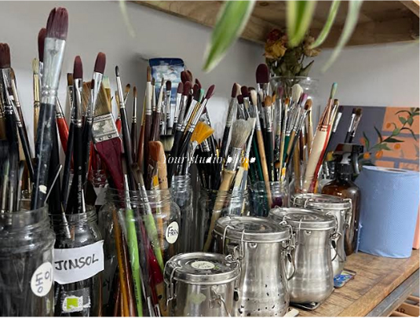

I am Yeoung-A Yeo, a Korean painter living in Dublin, Ireland. In 2007, I came to Dublin on our honeymoon, following my husband's wish to be here. Somehow this city became the place where I grew into a mother of two, and where, for more than fifteen years, I have gone on living as a foreigner.
Compared to the dense, crowded days of Seoul — where my working life once was — this is a place with more pauses, more open space between things. Questions about what lies at the essence of things came naturally here. Perhaps it was precisely because I have lived as an outsider that I came to look more deeply at the relationships between one person and another.
In the landscape here, where the contrast of light can turn fierce and then, at times, fade until even the shadows are gone, I found myself watching the countless relations that surround us. The space where light gives rise to shade. The distance between us that the wind reveals as it passes through. The current that fish stir into the water, reaching somewhere far beyond them and leaving its mark there. Within all of these connections, I wanted to hold on to those supple, fleeting moments.
This is why I work in oil — a material of weight and density — to inscribe, quietly, the unseen moment of connection into something solid.
I am still looking, still thinking, in search of an image that can reveal, more deeply and more strongly, the simple truth that we are connected to one another.
나는 현재 아일랜드 더블린에 살고 있는 한국인 화가, 여영아다. 2007년, 신랑의 소망을 따라 허니문으로 찾은 더블린에서 어느새 두 아이의 엄마가 되었고, 15년이 넘는 시간 동안 여전히 이방인으로 살아가고 있다.
과거 나의 일터였던 서울의 빼곡한 일상에 비해 쉼표가 많은 이곳에서, 본질에 대한 고민은 자연스러운 일이었다. 어쩌면 이곳에서 이방인으로 살아왔기에 사람과 사람 사이의 관계에 대해 더 깊이 고찰할 수 있었는지도 모른다.
빛의 대비가 강렬하다가도, 때로는 빛이 사라져 그늘조차 사라지는 이곳의 풍경 속에서 나는 우리를 둘러싼 수많은 관계들을 바라보았다. 빛이 그늘을 만드는 공간, 바람이 지나가며 일깨워주는 서로 간의 간격, 그리고 물고기들이 만들어내는 물의 흐름이 저 너머 어딘가에 닿아 영향을 미치는 그 모든 연결 속에서 나는 그 유연한 순간들을 붙잡고 싶었다.
그래서 물성이 강한 유화를 통해 그 역설을 담아내고자 한다. 견고한 물질에, 보이지 않는 연결의 순간을 가만히 새겨두는 일. 우리가 서로 연결되어 있다는 사실을 더 깊고 강하게 드러낼 수 있는 형상을 발견하기 위해, 나는 여전히 바라보고 사유한다.
Connected. Related. Never alone. Wherever my eye falls, I find this law again. A person, a plant, an animal, or a stretch of landscape — whatever I look at, it never stands by itself. It touches what lies beside it, leans on it, and reflects it without end.
To exist as oneself is to bear the weight and the beauty of countless relations. Yet we so often forget this. We live believing we are each an isolated point in time and space. I want to speak of those relations — to uncover them, to let the viewer notice the invisible threads once more.
In my work, the main subject is only a gateway; the real narrative lies in how that subject meets what surrounds it. Even when a figure appears alone on the canvas, they are never truly alone. They are held by light that falls from a source we cannot see, cradled by the air around them, kept company by the memories left in the spaces they have passed through.
By holding my attention on the quiet exchange between figure and ground, I try to make one thing visible: that no one is ever left to stand alone. I paint the presence of the unseen, the nearness of the other, and the warmth of knowing we are held.
— Yeo Yeoung-A
Every painting begins with a feeling, not a subject.
Observing. I spend a long time before a canvas doing nothing — looking, feeling, letting the subject settle into something more than what it appears to be.
Painting. I work in layers, often across several sessions. I paint over mistakes; they build the surface. Most of the painting is invisible in the end.
Knowing when to stop. A painting is finished when adding anything more would break something. That moment is different every time.
My studio is a home — small, light-filled, and unhurried. I teach adults who want to explore painting properly, and children who are learning to truly see.
Classes are kept small so that every student gets real attention. Beginners and experienced painters are equally welcome.

None at all. I genuinely enjoy teaching complete beginners — there's nothing to unlearn. You just need curiosity and willingness to be patient with yourself.
Ages 7 to 12.
Yes. Commissions make wonderful gifts. I take a small number per year. Tell me what you have in mind — a place, a person, a feeling — and we'll discuss from there.
I ship worldwide. Paintings are carefully rolled or boxed, and sent fully insured. Shipping costs are calculated based on destination and size, and confirmed before payment.
Every painting is signed on the back and comes with a handwritten certificate of authenticity, including title, medium, dimensions, and year.
For class enquiries, commissions, or just to talk about painting.